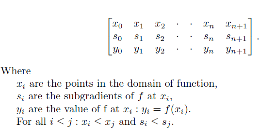
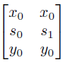

Graph-matrix calculus (GPH), Function model
A continuous, convex, possibly nonsmooth, PLQ function can be encoded in a "GPH matrix" as follows:

This is a useful representation because the subdifferentials of functions under many convex transforms can be computed by a matrix multiplication with the graph of the subdifferential of the original function. The above matrix stores the graph of the subdifferential.
The subdifferential of a PLQ function f is a piecewise affine function, with potentially vertical regions where f is nonsmooth. Hence the matrix merely needs to store the vertices in the subdifferential, that are necessary to recover the entire graph using piecewise linear interpolation. Breakpoints in the domain of f will be x values in gph, but the converse is not necessarily true: redundant points may be stored in the matrix, as will often be the case after performing a convex transform. Uniqueness of representation is not guaranteed, as it is with PLQ functions.
The points at index 0 and n+1 are stored to capture the subdifferential on the intervals [-inf ,x(1)] and [x(n), inf], respectively. To indicate that a function has bounded domain on the left, set x(0)=x(1) and y(0)= inf, and for boundedness on the right, set x(n)=x(n+1) and y(n+1)= inf. All other y(i), and all x(i) and s(i), must be finite.
The indicator function of a point x0, f(x) = I_{x0}(x) + y0, is stored as the matrix

for any s0 < s1. (If s0 = s1 then the matrix collapses to a single column, and the graph is no longer maximal.)
(The matrices listed are just potential representations, that are minimal in size.)
%f1(x) = x^2: G1=[0 1; 0 2; 0 1]; %f2(x) = |x|: G2=[-1 0 0 1; -1 -1 1 1; 1 0 0 1]; %f3(x) = 0 on [-1,1]; f(x) = %inf elsewhere: G3=[ -1 -1 1 1; -1 0 0 1; inf 0 0 inf]; %f4(x) = 0 on [-1,1]; f(x) = x^2 - 1 elsewhere: G4=[-2 -1 -1 1 1 2; -4 -2 0 0 2 4; 3 0 0 0 0 3]; |
Bryan Gardiner, University of British Columbia, BC, Canada